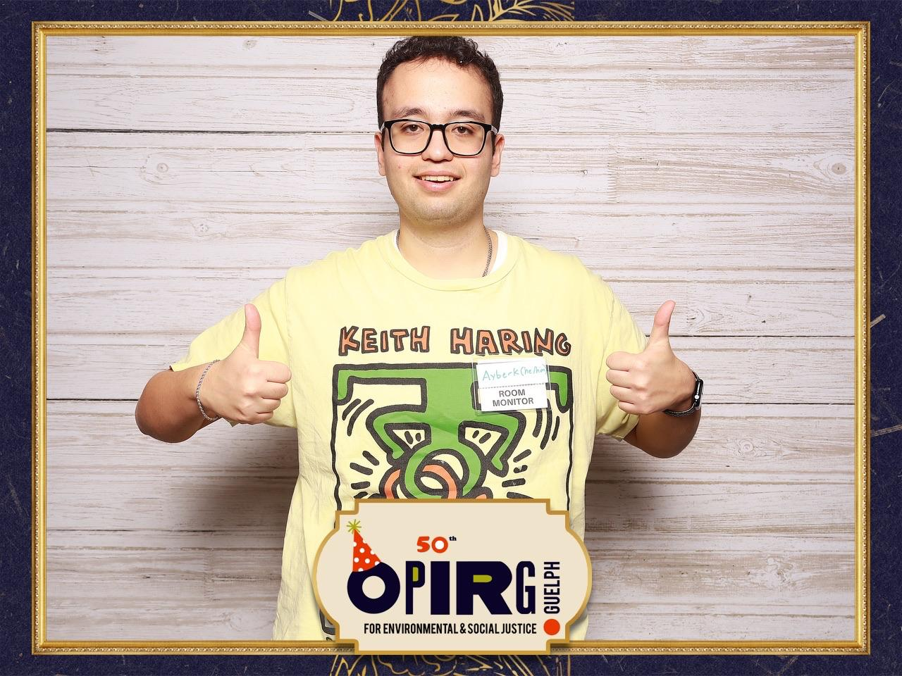
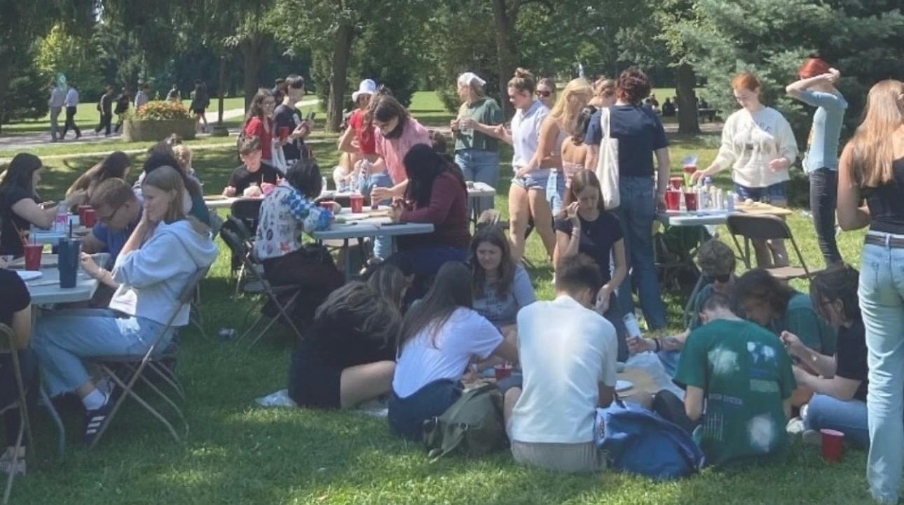
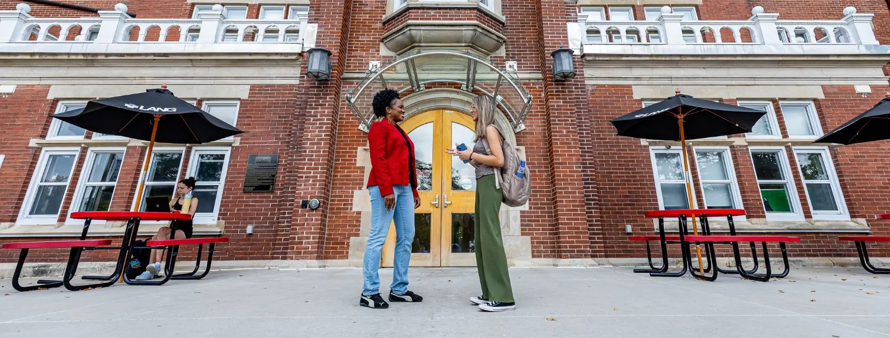

Events and Programming Assistant - OPIRG Guelph
Since September 2023, I have been working as an Events and Programming Assistant at the Ontario Public Interest Research Group (OPIRG) in Guelph. This role has been a fantastic counterbalance to my heavily technical software engineering studies. It allows me to engage directly with the community and focus on social and environmental justice issues.
I have had the privilege of partnering with a highly diverse, passionate, and energetic volunteer team. Together, we have brainstormed, planned, and successfully executed more than 20 community events and educational workshops. These ranged from sustainability seminars to local community building exercises. By modernizing our outreach methods and utilizing digital prototyping tools like Canva for our marketing materials, we completely revamped our event planning strategies. This direct effort resulted in a 35% boost in overall participant attendance across our programming.
In addition to event planning, I stepped out of my comfort zone and took on media broadcasting responsibilities. I developed, recorded, and meticulously edited audio content for RadiOPIRG, which broadcasts on the local university radio station, CFRU 93.3FM. By introducing fresh, relevant topics for university students and improving our audio editing workflow, we successfully increased our listenership reach by 25%. It taught me a lot about public speaking and audio technology.

Student Representative - Environmental Governance Society
Between September 2024 and April 2025, I proudly served as a Student Representative for the Environmental Governance Society on the University of Guelph campus. Sustainability and environmental protection are topics I deeply care about, a passion that also drove my IoT Drip Irrigation engineering project back in Turkey.
As a representative, my main objective was to bridge the gap between the society's initiatives and the general student body. I coordinated several joint outreach campaigns, setting up informational booths at the University Centre and running digital awareness drives. These campaigns successfully reached over 3,000 students on campus. We worked hard to spread awareness about proper recycling protocols, energy conservation in dormitories, and local environmental policies. Our consistent efforts led to a 35% measurable increase in student engagement with campus sustainability initiatives. It was a great lesson in leadership, public relations, and grassroots organizing.

Participant - University of Guelph CORE Program
Alongside my other extracurriculars, I was an active and dedicated participant in the University of Guelph CORE program during the 2024-2025 academic year. As someone who has lived in different countries and navigated various cultures, I believe that building an inclusive environment is crucial for any community's success.
Through the CORE program, I engaged in extensive Diversity, Equity, and Inclusion (DEI) workshops. These sessions involved deep discussions, role-playing scenarios, and critical thinking exercises about systemic biases and accessibility. My primary goal was to learn actionable strategies to better support my peers, both in academic group projects and in everyday campus life. These workshops gave me the tools to help foster a more equitable, understanding, and welcoming campus environment for everyone, regardless of their background.

Language Proficiencies
I have always believed that communication is the ultimate key to success, both in writing clean software code and in navigating real life. I am very proud to be multilingual, which has significantly broadened my worldview.
I am completely fluent in English and Turkish, allowing me to seamlessly transition between different personal and professional environments. Furthermore, I have developed a strong proficiency in French and German. Knowing multiple languages has not only helped me connect with a much wider range of international students on campus, but it also allows me to read technical documentation and research papers from different parts of the world. It provides a unique cultural perspective that I bring into every team project I join.